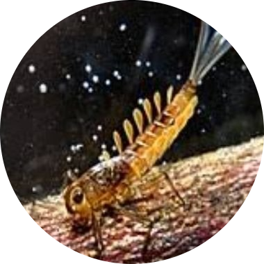

|  | Bruno Rafael Morais de MacêdoBiologist at Federal University of Rio Grande do Norte Graduate in Biological Science and hold a master degree in Forest Science. Main work in Urban Ecology with emphasis in Botany. |
| Dates | Work |
|---|---|
| 2008-current | Biologist at UFRN |
| 2010-2012 | Manager of Arborius Environmental Consultants |
| HTML development | ⭐⭐ | R analysis | ⭐ |
| Botany | ⭐⭐⭐⭐ | Urban Forest | ⭐⭐⭐⭐⭐ |